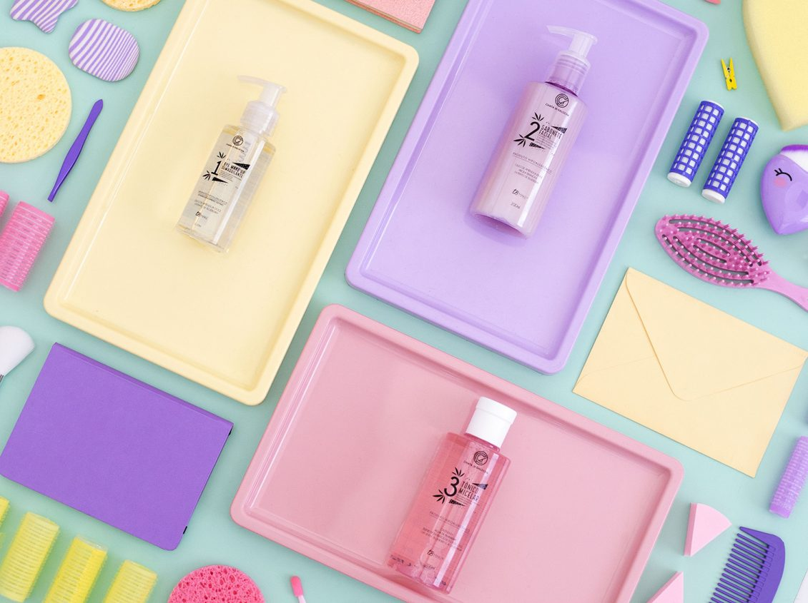

Tudo sobre os novos produtos Chata de Galocha!
Hoje eu estou muito feliz em vir aqui apresentar pra vocês mais três produtos na marca Chata de Galocha! As máscaras vocês já conhecem, né? Lançamos no começo do ano junto à TBmake e há pouco tempo contei pra vocês que elas também estão na Sephora!
Comecei pelas máscaras por ser um tipo de produto que eu AMO usar, mas não para o dia a dia. Por isso, os meus novos produtos chegaram para te acompanhar na sua rotina de cuidado com a pele todos os dias!
Agora nós temos também um demaquilante em óleo (que é o meu xodó!), sabonete facial e tônico micelar, três passos perfeitos para você usar antes das suas máscaras! Quero explicar cada um deles pra vocês:
Bye Make Up demaquilante: comecei a olhar com mais carinho para os produtos em óleo logo quando aquela famosa rotina de beleza das coreanas começou a pegar por aqui. E o cleansing oil, um tipo demaquilante feito com óleo, foi um dos produtos que adotei de verdade na minha rotina de beleza.
Tônico micelar: este é um passo na rotina de beleza que muita gente esquece que existe, né? Eu mesma não tinha o costume de usar, mas adotei o tônico recentemente, vi diferença na saúde e no aspecto da pele e percebi que era importante ter esse produto na minha linha.
Sabonete líquido facial: ele tem uma das texturas mais gostosas que já experimentei no meu rosto… Meio aveludada, sabe? É um sabonete que não deixa sua pele esturricada por manter a hidratação da sua pele. Tem em sua composição composto de alcaçuz, amora, semente de uva, óleo de amêndoa doce, extrato de blueberry e argila branca.
A argila, inclusive, tem efeito purificante, então ela remove os resíduos de maquiagem e poluição, limpando a pele se ressecar. A amêndoa e o blueberry agem criando uma película protetora na pele para que ela não perca a umidade natural que tem e também contra agressões externas.
Você poder usar o sabonete de manhã e à noite e, assim como todos os produtos a linha, ele serve para todos os tipos de pele.
Cada um deve ser livre para encontrar o seu modo de ser. Ame, descubra, divirta-se!